寻求方法缓解焦虑
每个人都有认为一件事物美或不美的权利，但请从狭隘中挣脱，怀有一颗包容的心，包容不同的审美，包容不同的表达，不要让容貌焦虑继续蔓延我们不可能完全忽视自身的缺陷，每个人都有自己的长处和短处。我们要正视自己的不足，敢于面对有“缺陷”的自己，积极接受自己的不足。同时要努力发展自己的优势，通过发扬自己的长处来弥补自身的不足，去积极寻求方法，缓解自身的焦虑，让自己变得优秀且自信。
大学生认为缓解焦虑方法
数据来源：当代青年焦虑报告[3]
积极运动与社交
人们运动频率越高、社交频率越高、网络使用时间越少，焦虑水平越低。在每天都运动的人群中，只有20.96%的人客观焦虑水平为高，而在从不运动的人群中，这个比例几乎是前者的两倍，达39.56%；同样的，在每天都有社交活动的人群中，客观焦虑水平为高的人占23.59%，而从不参与社交活动的人则有39.11%焦虑水平为高。大量研究证实，体育活动和锻炼对减少焦虑有积极的帮助；网络使用时间与焦虑水平也被证实有正向联系。
社交活动与焦虑的关系
数据来源：当代青年焦虑报告[3]
积极运动，保持对生活的热爱。“生命在于运动”，通过适当的运动，我们能够舒缓身心从而缓解自身的焦虑。适当的运动还可以转移我们的注意力，从而将烦恼抛之脑后，感受生命的律动，使大脑得到真正的放松。
运动与焦虑的关系
数据来源：当代青年焦虑报告[3]
运动习惯与睡眠质量的关系
数据来源：运动与睡眠调查报告[2]
勇敢自信做自己
拥抱脆弱和接受不完美都是一个人成熟路上的一道坎儿。只有接受了自己的不完美才有真正的自信，自信的人内心才有真正的力量，这是一切物质的基础，只有做到这一点才能由内而外地散发出独特的个人魅力。真正的奢侈不在于用多贵的包包，而在于拥有一种态度、一种自信：接受自己的不完美，忠于自己的内心，开心地活着。只要拥有了自信，一切便唾手可得，那种自信幸福的磁场是由内而外的光环，完胜所有的奢侈品。自信是治愈焦虑的必要前提。一些对自己没有自信心的人，对自己完成和应付事物的能力是怀疑的，夸大自己失败的可能性，从而忧虑、紧张和恐惧。因此，我们必须自信，减少自卑感。应该相信自己每增加一次自信，焦虑程度就会降低一点，恢复自信，也就是最终驱逐焦虑。
中国女性提高自信的方式
数据来源：2018中国女性自信报告[3]
如果真的感到困扰，那只能随着你年龄的增长,要尽快去开发自己的灵魂，也就是精神世界;去寻找对于自己的生命来说最重要的事情，在这个事情上自己能够获得自我价值感，满足感和精神快乐。这些东西是超出了生存之上的体验，与物质条件，外在容貌，周遭境遇无关，是没有功利性的;只有找到这些，获得内心的充实和自由，才能体会到幸福。当你的心灵有依托时,会发现对于容貌也就没那么高的要求了。
中国人提高自信的八大热门方式
数据来源：2018中国女性自信报告[1]
中国女性的自信指数与学历呈正相关。在中国，学历越高的女性越自信——知识是很好的化妆品。
学历与自信的关系
数据来源：2018中国女性自信报告[1]
你的容貌不是别人的景观
每个人都是芸芸众生中独一无二的审美个体，要对美的概念有更为清醒的认知。千姿百态是人类社会的本来模样，人人都追求美，但没有必要，也更不可能是千人一面。年轻人关注容貌、追求高颜值没有错，但不能因容貌而焦虑。“腹有诗书气自华”，与其花费大量时间、精力追求外貌精致，不如通过规律作息、得体衣着、健康生活、文明举动，用人格魅力来感染他人。